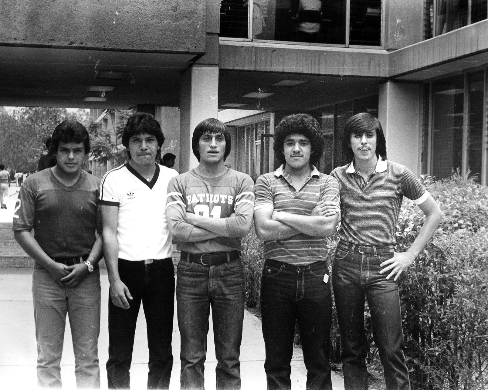

Bachilleres Plantel Cancún Dos, fue creado el 15 de agosto de 1994, iniciando sus actividades en lasinstalaciones del plantel Cancún Uno, atendiendo a 433 alumnos distribuidos en 8 grupos de primer semestre, con una plantilla laboral de 19 docentes y 12 administrativos. En el mes de Octubre de ese mismo año paso a ocupar sus instalaciones propias, ubicadas en la región 102 sobre la Avenida Francisco I. Madero por calle 137, donde funciona hasta ahora. En 1996 se abrieron las tres primeras capacitaciones
Quintana Roo, uno de los más jóvenes de los Estados de la República Mexicana, nació como entidad federal el 8 de octubre de 1974, manifestandose así el esfuerzo y trabajo arduo y difícil de las autoridades que les correspondió realizar las labores de establecer las bases para crear su infraestructura y darle el mayor impulso necesario para nuestro naciente Estado y uno de los renglones en los que se tenía mayor preocupación era el educativo, porque estaban conscientes de la responsabilidad que tenían con la sociedad quintanarroense; para poder dotar y abrir los espacios educativos que impidieran la emigración de jóvenes estudiantes a otras entidades, en busca de oportunidades de educación media superior y superior, ocasionando gastos muy elevados para la economía familiar y propiciando la descapitalización a nuestro Estado.
Las autoridades educativas, visualizan la necesidad de ofrecer a los jóvenes que egresaban de las diferentes escuelas secundarias, la oportunidad de continuar sus estudios en una Institución de nivel medio superior de carácter terminal y desarrollan el Proyecto de creación del Colegio de Bachilleres.
El 27 de Agosto de 1980 , la Honorable II Legislatura Constitucional del Estado Libre y Soberano de Quintana Roo, emite el Decreto No. 95. que establece la creación del Colegio de Bachilleres del Estado de Quintana Roo. Las autoridades educativas, visualizan la necesidad de ofrecer a los jóvenes que egresaban de las diferentes escuelas secundarias, la oportunidad de continuar sus estudios en una Institución de nivel medio superior de carácter terminal y desarrollan el Proyecto de creación del Colegio de Bachilleres. A iniciativa del Ejecutivo Estatal, el 27 de Agosto de 1980 , la Honorable II Legislatura Constitucional del Estado Libre y Soberano de Quintana Roo, emite el Decreto No. 95. que establece la creación del Colegio de Bachilleres del Estado de Quintana Roo como un organismo público descentralizado con personalidad jurídica y patrimonio propio. Las actividades académicas del Colegio de Bachilleres dieron inicio en el Plantel Chetumal con tres grupos en el turno vespertino en las instalaciones de un edificio prestado y que funcionó como escuela, sus cuatro primeros grupos se integraron con 217 alumnos que provenían de la preparatoria del Colegio Particular Hidalgo, que cerró sus puertas.
La primera generación egresó en enero de 1981.
Plantel Chetumal Uno.
La primera generación egresó en enero de 1981, y la segunda en junio del mismo año, y se tenían las Capacitaciones para el Trabajo de: Contabilidad Fiscal y Administración de Recursos Humanos; actualmente se ofrecen: Informática. Contabilidad, Laboratorista Clínico, Administración de Recursos Humanos y Dibujo Arquitectónico y Ciencias de la Comunicación.
El segundo Plantel en crearse fue el de Cancún, el cual inició sus actividades en septiembre de 1981, que al inicio de sus actividades tuvo una matrícula de 98 alumnos distribuidos en 2 grupos. Las Capacitaciones para el Trabajo fueron tres: Admón. de Rec. Humanos, Admón. de Emp. Turísticas, Dibujo Arquitectónico, el personal con que contaba en ese entonces estaba constituido por 8 Administrativos y 13 Docentes
El segundo Plantel en crearse fue el de Cancún.
El personal con que contaba en ese entonces estaba constituido por 8 Administrativos y 13 Docentes.
El tercer Plantel se creó en septiembre de 1984 en el poblado de Bacalar , el cual cuenta con características muy especiales, ya que ha sido uno de los Planteles que se ha caracterizado por ser formador integral de sus jóvenes, los cuales han representado a su Plantel con una energía singular en los eventos y concursos académicos y culturales.
El tercer Plantel se creó en septiembre de 1984 en el poblado de Bacalar.
Al inicio del Colegio de Bachilleres, su organización y estructura requerían de una administración menos compleja, que la actual, por lo que la Dirección General recaía directamente en el Secretario de Gobierno, el cual realizaba las funciones y tareas encomendadas a la Institución.
Los distintos cambios que en su evolución se generaron como consecuencia del crecimiento y desarrollo del Colegio de Bachilleres, demandaron el establecimiento de una Dirección General que se hiciera responsable de la coordinación de esfuerzos y establecimiento de las políticas y normatividad operativa en lo administrativo y académico, para dar cohesión y armonía a las actividades del mismo. Sentimos que en la labor educativa siempre hay trabajo por hacer, y para ello contamos con el gran entusiasmo del personal docente y administrativo, que en forma dinámica se encuentra en la búsqueda de estrategias para mantener el gran prestigio que nuestro sistema ha alcanzado.
La comunidad Bachilleres de Quintana Roo avanza en la culminación de sus metas, el estudiantado cumple con su entusiasmo su responsabilidad de estudiar: la deserción escolar ha disminuido considerablemente, la reprobación también; los docentes se actualizan permanentemente y en reuniones de academia comparten experiencias y evalúan avances programáticos, el personal directivo se esfuerza en cumplir con éxito su cometido. Nuestro reconocimiento y nuestro agradecimiento a todos y cada uno de los que creyeron en el proyecto educativo del Gobierno del Estado, mismo que se ha cristalizado en 15 planteles, 19 Módulos de Educación Media Superior a Distancia y 4 Centros de Enseñanza Abierta , ubicados a lo largo y ancho de la geografía estatal. Este conjunto de instituciones que integran el Colegio de Bachilleres, atestiguan la extraordinaria vitalidad unida a la pasión y la fe creadora que las autoridades educativas en nuestro Estado siempre han manifestado.
Estos tiempos deberán ser los de compromiso y entrega a nuestras ocupaciones para continuar en la construcción de una nueva nación y los de estudio fecundo que forme a los ciudadanos que requiere nuestra patria; hoy más que nunca, los mexicanos debemos estar unidos en torno a los ideales que han hecho a nuestra nación libre y fuerte. El Colegio de Bachilleres continuará siendo vanguardia y atalaya en los albores de un nuevo siglo.